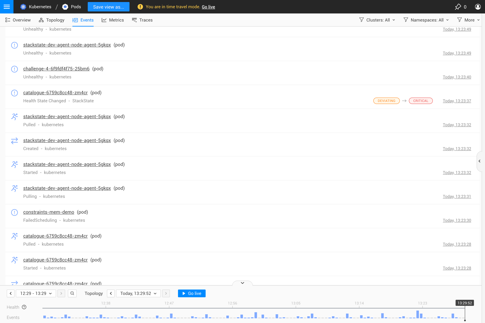
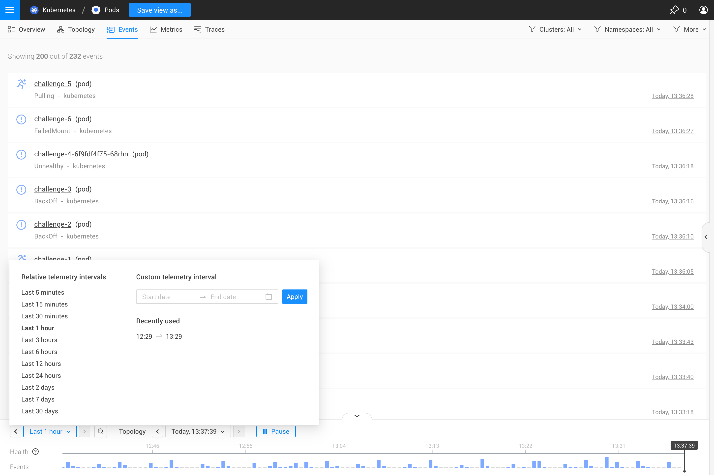

|
Este documento foi traduzido usando tecnologia de tradução automática de máquina. Sempre trabalhamos para apresentar traduções precisas, mas não oferecemos nenhuma garantia em relação à integridade, precisão ou confiabilidade do conteúdo traduzido. Em caso de qualquer discrepância, a versão original em inglês prevalecerá e constituirá o texto official. |
Perspectiva de Eventos
Visão Geral
A Perspectiva de Eventos mostra eventos e mudanças para os elementos na visão atual ou na topologia filtrada.

Filtrar eventos exibidos
Os eventos exibidos podem ser filtrados no menu filtros no canto superior direito da interface de visualização. Os filtros de eventos serão aplicados a todos os eventos mostrados na visualização: a perspectiva de eventos, as perspectivas de destaques e a linha do tempo.
Filtrar por propriedades
Os filtros de eventos definidos no menu filtros podem ser usados para refinar os eventos exibidos com base na categoria do evento, tipo, sistema de origem e tags.
Filtrar por componente de origem
Os filtros de topologia definidos no menu filtros definem os elementos (componentes e relações) para os quais os eventos serão exibidos. Apenas eventos relacionados a elementos que correspondem aos filtros de topologia aplicados ou à própria visualização estarão visíveis. Você pode ajustar os componentes para os quais os eventos são exibidos atualizando os filtros de topologia.
Filtrar por carimbo de data/hora
A Perspectiva de Eventos e as listas de eventos mostram eventos que correspondem ao Intervalo de telemetria selecionado na linha do tempo na parte inferior da interface de visualização. Ajuste o intervalo de telemetria para mostrar apenas eventos que foram gerados naquele momento.
Viagem no tempo
A Perspectiva de Eventos lista eventos que foram gerados:
-
pelos elementos de topologia que existiam no ponto no tempo especificado pelo tempo de topologia.
-
dentro do Intervalo de telemetria selecionado
Isso permite que você viaje no tempo tanto para eventos gerados por elementos de topologia disponíveis em um ponto específico da história quanto para eventos gerados dentro de uma janela de tempo específica. Selecionar um novo tempo de topologia fará uma viagem no tempo para a topologia que estava disponível naquele ponto da história. A lista de eventos será atualizada para incluir eventos dos elementos de topologia disponíveis naquele momento e dentro do intervalo de telemetria selecionado.
Por exemplo:
-
Ajuste o Intervalo de telemetria para aumentar ou diminuir o número de eventos exibidos.
-
Ajuste o Tempo de topologia para viajar no tempo até a topologia disponível naquele ponto da história. Eventos gerados dentro do intervalo de telemetria selecionado por elementos de topologia que existiam no tempo de topologia serão exibidos.
-
Clique em um carimbo de data/hora nas Propriedades de um evento para pular para este tempo de topologia. Isso atualizará a lista de eventos para exibir eventos que foram gerados:
-
por elementos de topologia que existiam naquele momento no tempo.
-
dentro do intervalo de telemetria especificado (isso será ajustado para se adequar ao carimbo de data/hora selecionado, se necessário).
-
